Marvel Studios vient enfin de dévoiler le premier trailer de Spider-Man : Brand New Day, le prochain chapitre consacré à l'homme-araignée incarné par Tom Holland. Prévu pour une sortie en salles le 29 juillet 2026 en France, ce film marque un tournant majeur pour le personnage après les événements bouleversants de Spider-Man : No Way Home.
Quatre ans ont passé depuis l'effacement de Peter Parker de la mémoire du monde. Désormais adulte, isolé et coupé de ceux qu'il aime, Peter tente de reconstruire sa vie dans un New York qui ne sait même plus qui il est. Une situation radicale qui promet un Spider-Man beaucoup plus solitaire, proche de la version du héros que l’on retrouve dans les comics.
Sommaire de l'article
- Un lancement du trailer pensé comme un événement mondial
- Une citation qui annonce le thème du film
- Synopsis officiel
- Un monde où Peter Parker n’existe plus
- Spider-Man reçoit les clés de New York
- Premiers aperçus des personnages
- Une chronologie liée à Daredevil : Born Again
- La renaissance d’un Spider-Man plus mature
Un lancement du trailer pensé comme un événement mondial
Pour révéler la bande-annonce, Marvel a mis en place une stratégie marketing inhabituelle. Pendant près de 24 heures, une vingtaine de courts extraits du trailer ont été diffusés progressivement sur internet.
Ces fragments ont été envoyés à différents fans, créateurs et communautés dans le monde entier. L'objectif était clair : pousser les spectateurs à assembler les morceaux eux-mêmes afin de reconstituer la bande-annonce complète.
Une opération qui a transformé la sortie du trailer en véritable chasse au trésor collective. La bande-annonce complète a finalement été publiée aujourd’hui aux alentours de 12h.
Une citation qui annonce le thème du film
Le trailer s’ouvre sur une phrase intrigante, probablement prononcée par Scorpion ou Tombstone :
« Les araignées ont trois cycles de vie. Entre deux cycles, elles sont vulnérables aux menaces. Et pour celles qui survivent… c’est une sorte de renaissance. »
Une phrase qui résume parfaitement le concept du film : la renaissance de Spider-Man après l’effacement de Peter Parker.
Synopsis officiel
« Quatre ans se sont écoulés depuis les événements de No Way Home, et Peter est désormais un adulte vivant seul, ayant volontairement disparu de la vie et des souvenirs de ceux qu'il aime.
Luttant contre le crime dans un New York qui ne le reconnaît plus, il se consacre entièrement à la protection de sa ville — Spider-Man à plein temps — mais à mesure que les exigences s'intensifient, la pression provoque une évolution physique surprenante qui menace son existence, tandis qu'un nouveau mode opératoire criminel étrange donne naissance à l'une des menaces les plus redoutables qu'il ait jamais affrontées. »
Un monde où Peter Parker n’existe plus
La conséquence la plus lourde de No Way Home est confirmée : plus personne ne se souvient de Peter Parker.
MJ, Ned, les Avengers, ses anciens camarades… tous ont oublié son existence. Peter vit désormais dans l’anonymat total, ce qui transforme Spider-Man en héros entièrement dédié à sa mission.
Cette nouvelle situation rapproche le personnage de la version classique du comics : un héros obligé de sacrifier sa vie personnelle pour protéger les autres.
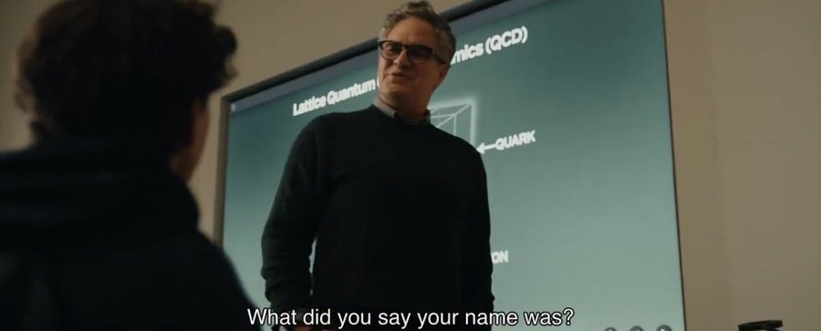
Spider-Man reçoit les clés de New York
Le trailer montre également une scène importante : Spider-Man recevant les clés de la ville de New York.
Fait notable, cette cérémonie n'est pas organisée par Wilson Fisk, mais par une nouvelle maire de la ville. Ce détail pourrait être directement lié aux événements de la série Daredevil : Born Again.
La saison 2 de la série, attendue le 25 mars, devrait justement éclairer la situation politique de New York et expliquer l'absence de Fisk lors de cet événement.
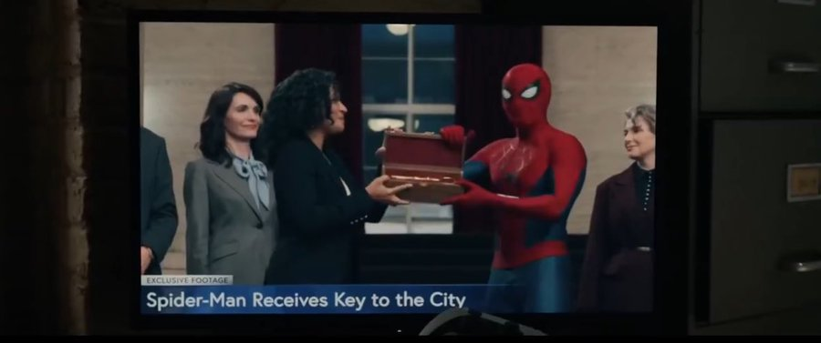
Premiers aperçus des personnages
Eman Esfandi – le nouveau petit ami de MJ
L'une des révélations du trailer concerne Eman Esfandi, aperçu pour la première fois dans le film. Le personnage devrait incarner le nouveau petit ami de MJ, conséquence directe de l’effacement de Peter Parker.
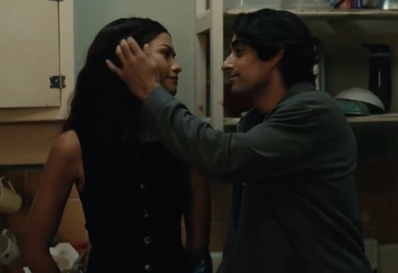
Spider-Man face à The Hand
Le trailer révèle également un affrontement entre Spider-Man et The Hand, la célèbre organisation ninja liée à l’univers de Daredevil. Cette apparition renforce l'idée que le film pourrait explorer un MCU plus street-level.
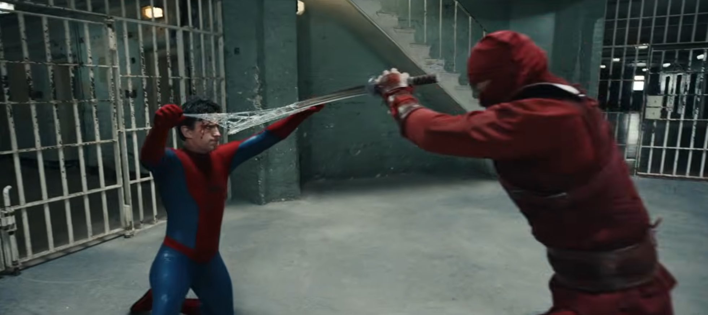
Le retour de Bruce Banner
Autre surprise du trailer : Mark Ruffalo apparaît brièvement en tant que Bruce Banner. Son rôle dans l'histoire reste encore mystérieux.
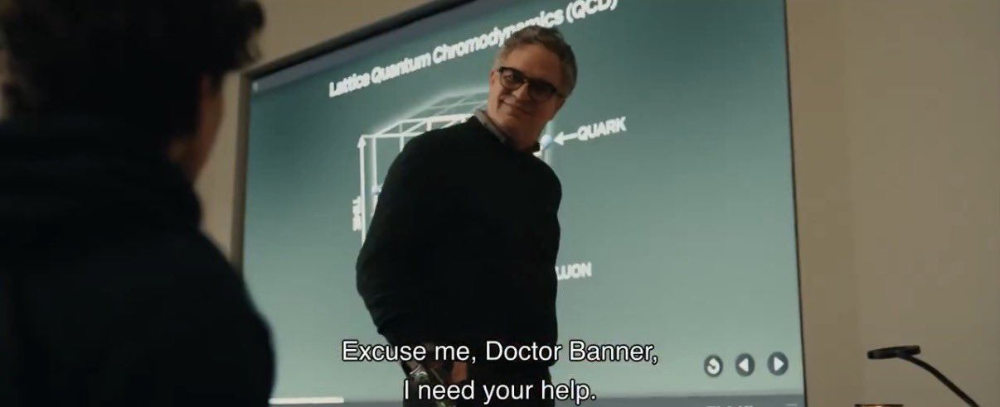
Scorpion enfin de retour
Le vilain Scorpion, interprété par Michael Mando, semble enfin faire son retour. Le personnage avait été teasé depuis la scène post-générique de Spider-Man : Homecoming, sortie en 2017.
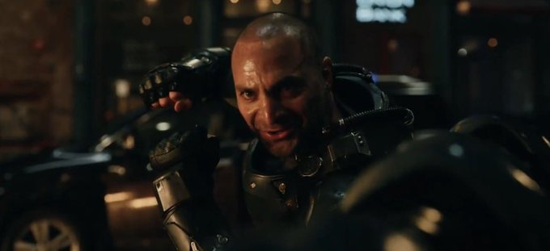
Tramell Tillman rejoint le MCU
Le trailer dévoile également la présence de Tramell Tillman. Son rôle n’a pas encore été révélé, mais son apparition alimente déjà plusieurs théories chez les fans.
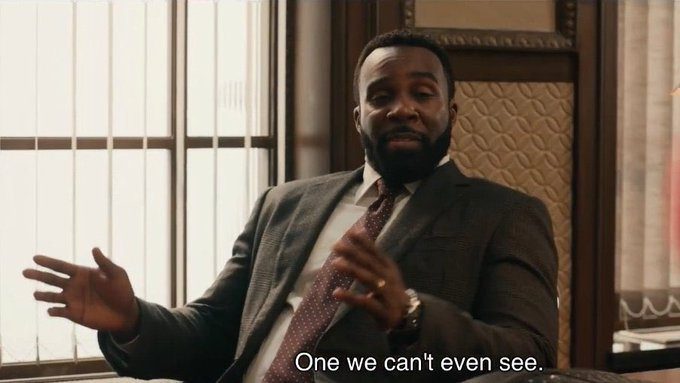
Un premier indice autour du personnage de Sadie Sink
Le trailer offre également un détail intriguant : un bref plan montrant les mains du personnage interprété par Sadie Sink. Bien que très court, ce plan a immédiatement attiré l’attention des fans.
Marvel n’a pour l’instant donné aucune information officielle sur son rôle, ce qui alimente déjà de nombreuses théories. Certains pensent qu’elle pourrait incarner un personnage important de l’univers Spider-Man.
Le retour de Jon Bernthal en Punisher
Le trailer dévoile également un nouvel aperçu de Jon Bernthal dans le rôle de The Punisher. Après son retour très attendu dans l’univers Marvel via Daredevil: Born Again, Frank Castle semble désormais s’inviter dans l’histoire de Spider-Man : Brand New Day.
La présence du Punisher renforce l’idée que le film pourrait explorer un MCU plus urbain et brutal, centré sur les menaces de rue de New York. Une direction qui rapprocherait davantage Spider-Man des héros comme Daredevil et des organisations criminelles qui dominent la ville.
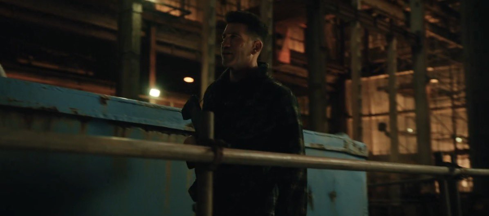
Boomerang et Tarantula aperçus dans le trailer
Le trailer offre également un premier aperçu de deux nouveaux adversaires : Boomerang et Tarantula. Bien connus des lecteurs des comics Spider-Man, ces deux criminels semblent faire partie de la nouvelle vague de menaces qui frappe New York.
Si leur rôle exact dans l'histoire reste encore inconnu, leur présence confirme une orientation plus street-level pour le film, avec plusieurs antagonistes issus directement du milieu criminel de la ville.
Marvel semble ainsi puiser dans la vaste galerie de vilains de Spider-Man pour construire un environnement plus dangereux et imprévisible autour du héros.
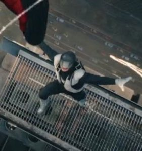
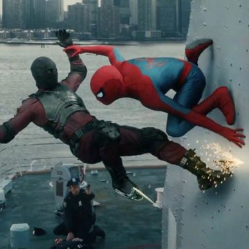
Le retour de Jacob Batalon en Ned Leeds
Le trailer dévoile également un premier aperçu de Jacob Batalon dans le rôle de Ned Leeds. Meilleur ami de Peter Parker dans les précédents films, Ned apparaît brièvement dans ces nouvelles images.
Depuis les événements de Spider-Man : No Way Home, Ned ne se souvient plus de Peter Parker. Reste désormais à savoir si leurs chemins se croiseront à nouveau dans Brand New Day, et si Peter choisira de lui révéler la vérité.
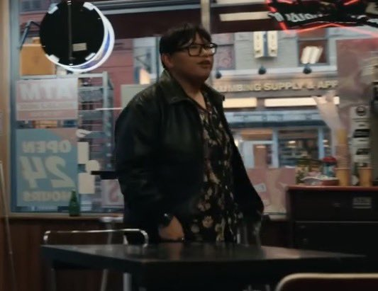
Zendaya de retour dans le rôle de MJ
Le trailer dévoile également un premier aperçu de Zendaya dans le rôle de MJ. Après les événements de Spider-Man : No Way Home, elle ne se souvient plus de Peter Parker, conséquence directe du sort lancé par Doctor Strange.
Cette nouvelle réalité pourrait profondément changer la dynamique entre les deux personnages. Peter devra désormais vivre avec l'idée que la personne qu'il aime ignore totalement son existence.
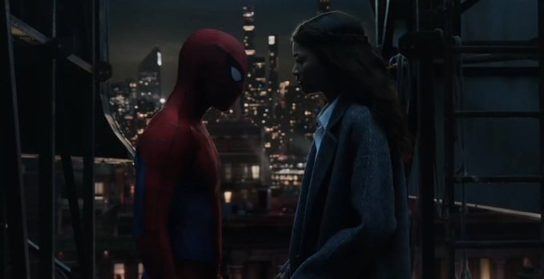
Une chronologie liée à Daredevil : Born Again
Selon les premières informations révélées autour du film, Spider-Man : Brand New Day se déroulera après les événements de la saison 2 de Daredevil : Born Again.
Ce positionnement dans la chronologie du MCU n’est pas anodin. La série centrée sur Matt Murdock devrait profondément modifier l’équilibre du pouvoir à New York, notamment autour de la politique locale et du crime organisé.
Si ces informations se confirment, Brand New Day pourrait être l’un des premiers films Spider-Man directement connectés à l’univers street-level du MCU, avec des liens plus forts entre Spider-Man, Daredevil et les organisations criminelles qui dominent la ville.
La renaissance d’un Spider-Man plus mature
Avec Brand New Day, Marvel semble vouloir repositionner Spider-Man dans un univers plus sombre et plus indépendant.
Peter Parker n’a plus d’identité reconnue, plus d’amis et plus de filet de sécurité. Il ne lui reste qu’une seule chose : son rôle de Spider-Man.
Si le film tient ses promesses, il pourrait marquer une véritable renaissance du personnage dans le MCU et ouvrir une nouvelle trilogie centrée sur un Spider-Man adulte confronté à des menaces encore plus dangereuses.
Les attentes sont désormais immenses. Marvel parviendra-t-il à recréer la magie d’Infinity War et Endgame ? Réponse dans un peu plus d’un an.
➡️ À lire aussi : La Critique de Agents of S.H.I.E.L.D. – Plus que des héros, une famille